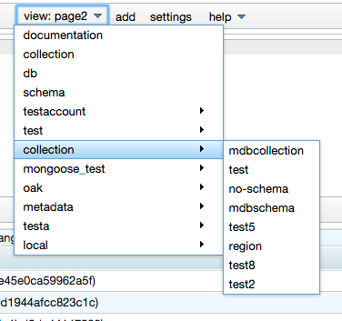

The view menu
Each collection has its own view. Views can differ greatly but a usual collection's view consist of a master view (e.g. a grid) to browse the collection's documents and a detail view (editor) displaying the details of a selected document. Views are accessed by a dropdown in the toolbar. There four general views for documentation, collection, databases and schemas. All collection views are grouped in submenus corresponding to their database.
Most Grids provide sorting by clicking on the column header. Querying is supported by either a simple textfield or a query editor. The query editor supports two modes. You may enter a query as json in a structured text editor. Alternatively you can click the query button and use the visual query editor. context menu.
store and document view are bookmarkable. A document may be selected from the master view or by following a link from another document. Select the document will automatically open the corresponding master view on the left. Documents are displayed in a tab container. his makes it easy to display linked document and switch between documents quickly.
The Collection view displays the metadata for the mongodb collections. The list of metadata includes:
A collection can have one or more schemas associated with it. The purpose of the schema is to guide the user in editing documents by providing a sophisticated detail editor. Either there is a single schema for all documents in the collection or each document contains a property that serves as type discriminator - often called type property. Schemas are stored separately and it is possible to compose schemas by reference, so that even a recursive schema structure representing a tree model is possible.
The following operations are available:Generating the schema is a very useful feature if there is an existing collection containing documents. The generation dialog ask the suer to specify the number of documents to sample and a optionally the name of the typeProperty. Restricting the number of samples will yield a faster generation process but may produce a less exact result. The typeProperty maybe specified if one exists. A typeProperty is a property whose value is interpreted as a type discriminator. There will be a distinct schemas for each value of the property. If the documents in the collection were created by a Mapping library in a statically typed OO-language (e.g. Morphia or spring data for Java) then the name of the class will most likely be stored in the typeProperty.
Schemas are stored separate from the collections.
The list of dbs provides information about their size on disk. The details include the list of collections. The operations available on a single db include the creation of a new collection and the synchronization between the actual db's collections and the collections stored in the metadata store. When starting the app these two will be synchronized automatically. If a new collection is created in the db while this app is running then this new collection will not be displayed until a synchronization is performed.